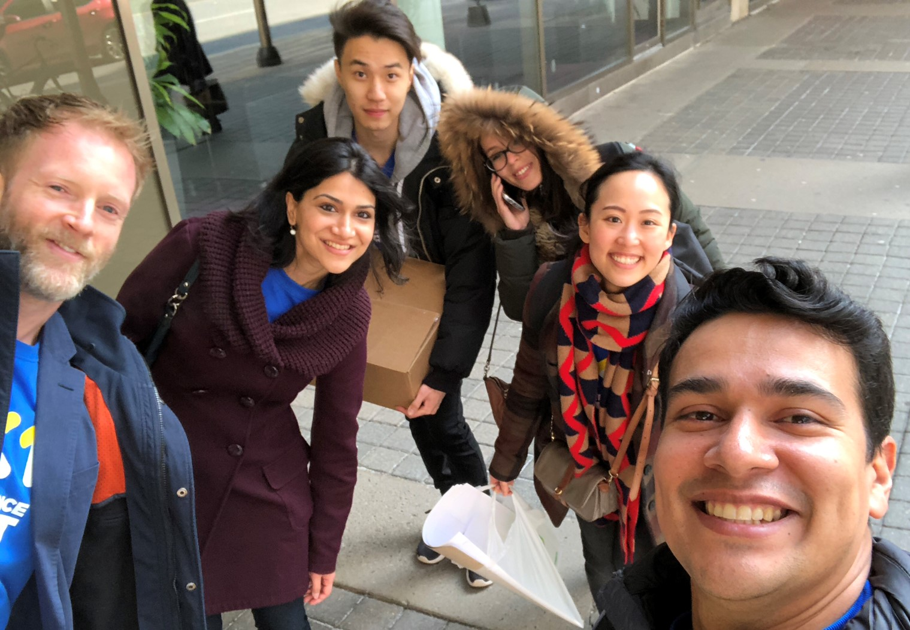
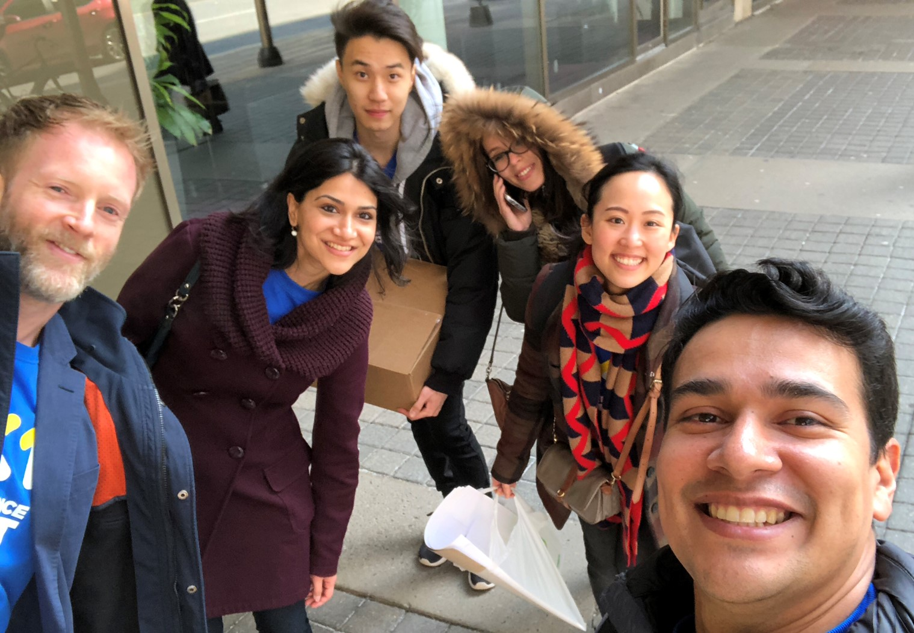

Tools: Sketch, InVision, HTML, CSS, Photoshop, Illustrator
My role
Last winter, I was a part of Xperience First, the newly formed design team within RBC Wealth Management. The team included a total of four UI/UX and product designers (including me), one design strategist, and one design lead. Our goal was to facilitate the adoption of human-centred design into the entirety of WMTS (Wealth Managament Technology & Solutions).
For privacy reasons, I'm unable to display RBC projects on my portfolio. However, I've been given permission to show them in-person.
Reimagining wire transfers
Our team was tasked with redesigning the user experience and interface of an internal wire transfer application, as well as the overall process when using said application. Before we could begin redesigning it, we needed to fully understand what the application was used for, how it was used, and its current problems. We conducted twelve interviews with end-users, learning about each and every touchpoint they go through during their day as well as their pain points.
Design thinking workshops & conferences
Besides redesigning digital applications and processes, our team also facilitated design thinking workshops for Wealth Management employees, like . The purpose of these training sessions was to teach other teams (non-design) about the benefits of using a design thinking approach. Design thinking can be applied to any problem, so by training different teams


Growing Xperience First
Started in December of 2017, Xperience First was relatively unknown within RBC when I began my internship. In order to raise awareness about our team and the services we provided, I iteratively designed and developed an Xperience First website, avaiable for all RBC employees to access through RBC's internal social platform.
It began with simple paper and marker mockups, then moved to HTML and CSS prototypes. After discussing possible improvements on the design with the team, I made some changes and developed a final website that's still being used today.
James Kim's
Portfolio
Portfolio